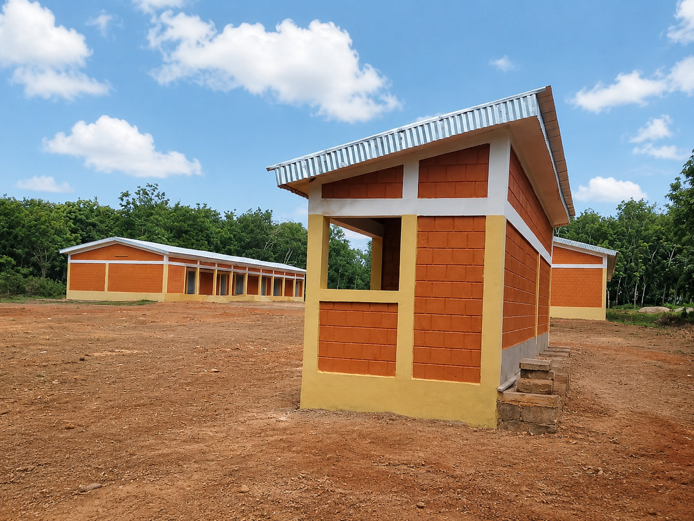
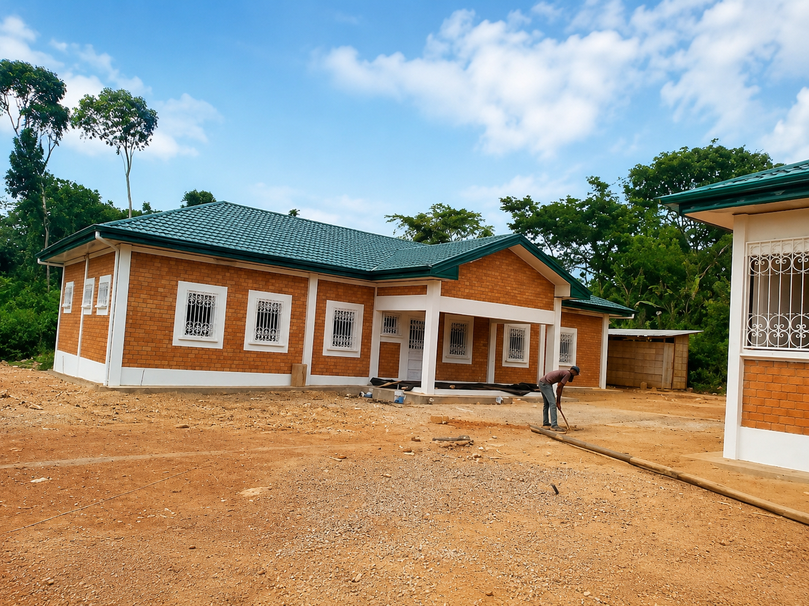
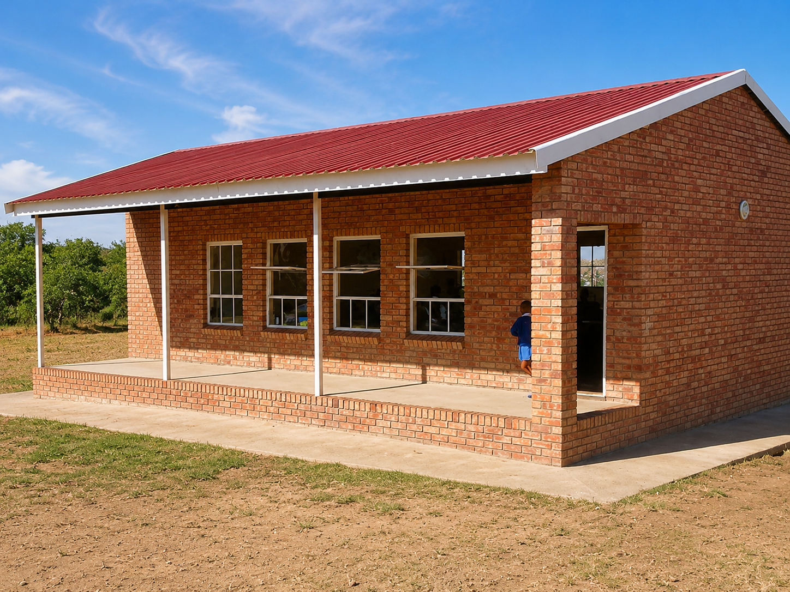

Fabrication des BTC
Production locale de briques en terre comprimée destinées aux constructions durables et adaptées au climat ivoirien.
EDIM SERVICES intervient dans la fabrication des briques en terre comprimée, la construction en BTC, l’électrification, la conception de plans d’infrastructures et l’accompagnement technique des chantiers.
Construction • BTC • Électrification • Plans • Main-d’œuvre
Créée en 2023 sous le statut de société à responsabilité limitée, EDIM SERVICES est une entreprise qui intervient dans le secteur du bâtiment, du génie civil et de l’électrification. Son positionnement repose sur une idée simple : proposer des solutions de construction fiables, accessibles et mieux adaptées aux réalités économiques et climatiques de la Côte d’Ivoire.
L’entreprise met particulièrement l’accent sur les briques en terre comprimée (BTC), une alternative aux matériaux classiques fortement consommateurs de ciment. À travers cette orientation, EDIM SERVICES souhaite contribuer à la diffusion de méthodes de construction plus sobres, plus rapides et plus confortables pour les ménages, les entreprises et les collectivités.
EDIM SERVICES ne se limite pas à la vente d’un matériau. L’entreprise cherche à structurer une chaîne de valeur complète : fabrication des BTC, location de machines de production, conception de plans, électrification, construction en BTC, fourniture et formation de la main-d’œuvre.
Ingénieur en génie électrique, conducteur de travaux et entrepreneur.
EDIM SERVICES est portée par Diarrassouba Magan, ingénieur en génie électrique disposant d’une expérience de terrain dans la conduite, la supervision et la réalisation de grands travaux d’infrastructures. Son parcours l’a amené à intervenir sur des projets liés à l’électricité, au génie civil, aux fondations spéciales et au bâtiment.
Il a notamment pris part à des travaux de renforcement du réseau électrique de Bouaké à partir du barrage de Kossou, à la réalisation de la ligne CLG reliant la Côte d’Ivoire, le Liberia, la Guinée et la Sierra Leone, ainsi qu’à des travaux sur des infrastructures majeures comme le Parc des expositions d’Abidjan, l’échangeur de l’Indénié, la Tour F, la Tour Entente, la Tour Ivoire et la centrale CIPREL 5.
Cette expérience lui permet d’aborder chaque chantier avec une culture de rigueur, de sécurité, de coordination et de résultat. À travers EDIM SERVICES, il met son savoir-faire au service d’une ambition : développer des solutions de construction durables, techniquement maîtrisées et accessibles au plus grand nombre.
Production locale de briques en terre comprimée destinées aux constructions durables et adaptées au climat ivoirien.
Location de machines de production de BTC pour entrepreneurs, particuliers et acteurs du bâtiment.
Conception de plans cohérents avec les contraintes techniques des BTC et les besoins du client.
Intervention sur les besoins électriques liés aux bâtiments, sites et infrastructures.
Exécution de chantiers utilisant les briques en terre comprimée comme matériau central.
Fourniture et formation d’équipes capables d’intervenir sur la fabrication, la pose et la finition des BTC.
Voici quelques visuels de constructions en briques de terre comprimée intégrés au site pour illustrer le type d’ouvrages qu’EDIM SERVICES souhaite développer : bâtiments scolaires, résidences et maisons à l’architecture simple, durable et adaptée au terrain.

Illustration d’un bâtiment communautaire ou scolaire réalisé en BTC, avec une mise en œuvre simple, robuste et adaptée aux zones rurales.

Exemple de résidence en BTC avec finitions soignées, volumes équilibrés et intégration harmonieuse des travaux de construction et d’aménagement.

Modèle de maison économique et fonctionnelle mettant en valeur la brique apparente, la sobriété des lignes et la ventilation naturelle.
Pour une construction en BTC, une location de machines, un besoin d’électrification, un plan d’infrastructure ou une formation de main-d’œuvre, vous pouvez nous contacter.
Téléphone : +225 0709074146
Email : edimservices6@gmail.com
Localisation : Côte d’Ivoire